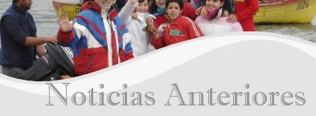
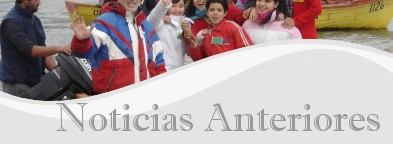

2013-02-04
Vacaciones de Verano
La administración del Centro permanecerá cerrada entre el 4 de Febrero y el 4 de Marzo.


|
El Centro COPAS Centro de Excelencia FONDAP está dedicado a la investigación científica de la circulación, ecología, ciclos biogeoquímicos y paleoceanografía del Pacífico Sur-Oriental. Su objetivo es comprender la variabilidad climática y oceanográfica presente y pasada en la región, sus impactos sobre los ecosistemas y la productividad regional. Esta investigación se realiza en forma multi- e interdisciplinaria. Abarca diversas escalas espaciales y temporales. Se basa en observaciones directas, análisis retrospectivos, trabajo experimental, y enfoques de modelamiento, y se lleva a cabo a través de seis programas de investigación. El Centro otorga entrenamiento avanzado en oceanografía y áreas relacionadas, a científicos jóvenes a través de diversas actividades en la Universidad de Concepción y en la Universidad Austral de Chile (universidad asociada), como son los programas de Post-Grado en Oceanografía, los Institutos Internacionales de Verano y el Programa de Postdoctorado. El Centro COPAS de la Universidad de Concepción fue creado en el año 2002 en respuesta a una necesidad País de reforzar y consolidar la capacidad de realizar investigación de excelencia en ciencias marinas. Chile por su posición estratégica frente al mar tiene un rol protagónico en asuntos oceanográficos que son de interés para América Latina y el mundo. El Centro estimula la colaboración nacional e internacional, liderando la exploración de esta vasta, remota y poco conocida, pero climáticamente importante región del planeta. También tiene por tarea educar, informar e interactuar con el público en general y con los responsables de las políticas públicas acerca de los recursos del océano y de los temas relativos al impacto de los cambios climáticos sobre los ecosistemas del Pacífico Sur-Oriental. Desde sus inicios en marzo de 2002, el Centro COPAS ha publicado 379 artículos científicos ISI, editado 5 libros, 35 capítulos de libros, y ha servido de plataforma de trabajo para 86 tesis de postgrado y más de 70 de pregrado. |
 

2013-02-04
Vacaciones de Verano
La administración del Centro permanecerá cerrada entre el 4 de Febrero y el 4 de Marzo.
2012-12-18
El Centro COPAS, le desea a usted y familia una Feliz Navidad y un Próspero Año Nuevo

Carina Lange Directora 2012-11-12
Symposium UV radiation and marine ecosystems: current research and strategies for the future
5-7 Diciembre, 2012 2012-10-29
Se invita a alumno de post-grado a realizar su tesis en Bio-óptica
Proyecto de Bio-óptica aplicado a desarrollar tecnologías rápidas de detección de Marea Roja Requisitos:
Duración de tesis y dedicación:
Sede del Cargo: Terraplen N 869 Remuneración: se cancelan honorarios mensuales Plazo de envío de antecedentes: 30 de noviembre de 2012 Enviar CV a: Alejandro Clément D. 2012-08-20
Instituto Austral de Verano XIII
El Departamento de Oceanografía y el Programa COPAS Sur-Austral de la Universidad de Concepción, Chile, anuncian el Austral Summer Institute XIII (ASI XIII) que se realizará en la Universidad de Concepción en diciembre de 2012 y enero de 2013. ASI XIII estará dedicado a temas en procesos físicos, químicos y biologicos en el ambiente marino. Completa información sobre programa, profesores y postulación disponible en: 2012-01-26
Vacaciones de Verano
La administración del Centro permanecerá cerrada entre el 30 de Enero y el 26 de Febrero.
2011-12-14
Feliz Navidad y un próspero Año 2012
 2011-12-13
Taller LIA MORFUN

El Laboratorio Internacional Asociado MORFUN, que asocia al centro COPAS con el Observatorio Oceanológico de Banyuls sur Mer (OOB, UPMC /CNRS) organizó un workshop en la estación francesa entre el 5 y el 8 de diciembre 2011. A la reunión asistieron investigadores chilenos y franceses, implicados en las tres líneas de investigación del LIA MORFUN. Este encuentro permitió delinear los proyectos que se desarrollaran durante el año 2012 y las perspectivas de colaboración entre OOB, la Universidad de Concepcion y la Universidad Austral de Chile. 2011-11-18
Curso: Tópicos de la Oceanografía del Pacífico Sur-Oriental (TOPAS)
El Programa preliminar del Curso TOPAS 2011 lo pueden encontrar en: y el plano del lugar de realización del Curso, lo pueden bajar en: 2011-07-25
Vacaciones de Invierno
La administracion del Centro COPAS permanecerá cerrada entre el lunes 25 y el viernes 29 de Julio, por vacaciones de invierno de la UdeC
2011-07-04
Instituto Austral de Verano XII
El Departamento de Oceanografía y el Centro de Investigación Oceanográfica en el Pacífico Sur-Oriental de la Universidad de Concepción, se complacen en anunciar el XII Instituto Austral de Verano (ASI XII), a realizarse en el Campus de la Universidad de Concepción y en la Estación Costera de Investigaciones Marinas de la Pontificia Universidad Católica de Chile, en octubre y noviembre de 2011, y en enero de 2012. ASI XII está dedicada a tópicos en Genómica Marina, agua y Cambio Climáico, Series de Tiempo Oceanográficas y Oceanografía Microbiana Completa información sobre programa, profesores y postulación disponible en: 2011-06-29
Un nuevo componente del ciclo del nitrógeno en zonas de mínimo de oxigeno (OMZ)
La diazotrofía, proceso mediante el cual microorganismos marinos utilizan el gas atmosférico N2 como fuente de nitrógeno es considerado una exclusividad de las zonas oligotróficas del océano mundial. Un estudio publicado en PLOS One muestra por primera vez que la fijación de nitrógeno molecular puede ocurrir en ecosistemas dominados por la surgencia de aguas desnitrificadas pobres en oxigeno. Los resultados obtenidos en la OMZ del norte de Chile y Perú ponen en evidencia la posibilidad de una interacción directa entre fuentes y sumideros de N en el océano y tienen importantes implicancias para la visión futura del ciclo del nitrógeno.
doi: 10.1371/journal.pone.0020539 2011-04-13
Boletín 03, Capítulo Ciencias del Mar, Red Universitaria Cruz del Sur
Contenido: "Cambio climático global a larga escala: ¿Qué información nos entregan los sedimentos marinos del Pacífico Sur-Oriental?" "Cambio climático global: Hipoxia, mortandades y varazones en la costa de Chile" "Reciclaje de gases invernadero (óxido nitroso y metano) en la región del Pacífico Sur-Oriental" "Cambios Climáticos en Chile: Proyecciones y necesidades regionales" "Ecología reproductiva, ecología larval y ontogenia bentónica temprana en un océano que se torna más cálido y que se acidifica" "La acidificación del océano y el pH del mar costero de Chile" "Cambio Climático y Pesquerías: Un ejemplo de aplicación" 2011-01-31
Vacaciones de Verano
La administración del Centro permanecerá cerrada entre el 31 de Enero y el 25 de Febrero.
2011-01-04
¿Quieres saber sobre nuestra investigación?
( En Ingles ) ¡¡¡ Lee nuestro Newsletter 21 !!!
2010-12-29
Tsunamis:
comprendiéndolos y conviviendo con el riesgo Taller de Difusión
Austral Summer Institute XI (ASI XI) Viernes 7 de enero de 2011 Auditorio Claudio Gay Facultad de Ciencias Naturales y Oceanográficas Inscripciones: monica.sorondo@oceanografia.udec.cl  Programa 2010-11-04
CONCURSO: Para el Cargo de Post-Doctorado en Oceanografía
CERRADO!!!
El/la candidato/a seleccionado/a trabajará en alguno(s) de los temas científicos del Centro que conlleve a publicaciones sobre los avances recientes en el entendimiento de la oceanografía del Pacífico Sur-Oriental. El cargo es de jornada completa por el periodo de 14 meses y está disponible de inmediato. 2010-10-04
Dr. Michael DeGrandpre
 Nos complace informar que el Dr. Michael DeGrandpre, profesor de Química de la Universidad de Montana, se encuentra visitándonos en un año sabático (desde septiembre de 2010 hasta mayo del 2011) en el Departamento de Oceanografía y el Centro COPAS de la Universidad de Concepción. Lo acompañan su esposa Kate e hijas Ella y Mabel. La investigación del Dr. DeGrandpre se centra en el desarrollo y aplicación de sensores autónomos para estudiar el ciclo del carbono oceánico. Junto con sus colegas de la UdeC, Osvaldo Ulloa, Oscar Pizarro y otros del Centro COPAS que están estudiando el sistema de surgencia frente a Concepción Chile, él colocará sensores en el anclaje cercano a la estación 18 de COPAS (36°27,86'S y 73°10,12'W, a 103 metros de profundidad). Estos sensores serán capaces de establecer en qué medida la surgencia controla la saturación de carbonato de calcio y de cómo los estados de saturación se alteran por la acidificación del océano. El Dr. DeGrandpre también impartirá una clase llamada "El Ciclo del Carbono en el Mar" en el Instituto Austral de Verano XI. El año sabático en Concepción es apoyado por la Universidad de Montana, EE.UU. / la Fundación Fulbright Chile, la Facultad de Ciencias Naturales y Oceanografía, y el Centro COPAS de la Universidad de Concepción. 2010-09-04
Donación para centro de investigaciones oceanográficas de la Universidad de Concepción
 La subsecretaria de Estado para Diplomacia Pública y Asuntos Públicos de Estados Unidos Judith McHale anunció el miércoles 1 de septiembre, la entrega de una contribución de 310 mil dólares para el Centro de Investigación Oceanográfica en el Pacífico Sur-Oriental (COPAS), de la Universidad de Concepción. 2010-09-03
Nuestro Nuevo Edificio
2010-09-03    2010-09-03
Boletín 02, Capítulo Ciencias del Mar, Red Universitaria Cruz del Sur
 Contenido: "El tsunami de 2010 en Chile: Devastación y sobrevivencia de las comunidades de pescadores artesanales" "Levantamiento cosísmico de la costa del Bío Bío como efecto del terremoto del 27 de Febrero de 2010 y su efecto sobre la diversidad del intermareal rocoso" "Efecto del tsunami del 27 de Febrero de 2010 sobre la estructura física y biológica del estuario del río Queule (Región de La Araucanía)" "Evidencias del hundimiento en las islas levantadas por el terremoto de 1960: un precedente para el futuro de la costa levantada por el terremoto del 2010" "Efectos del terremoto y tsunami del 27 de Febrero de 2010 sobre las playas arenosas del Maule y Bío Bío" "Efectos del terremoto y tsunami del 27 de Febrero del 2010 sobre la comunidad de fondos blandos de Bahía Coliumo" "Altura y propagación de las olas generadas por el tsunami del 27 de Febrero a lo largo de las costas de Chile" "Posible influencia de una recientemente descubierta falla de escala regional en el mecanismo del terremoto del 27 de Febrero de 2010" 2010-09-02
Boletín 01, Capítulo Ciencias del Mar, Red Universitaria Cruz del Sur
 Contenido: "Impacto del terremoto sobre mamíferos marinos: El caso de la lobería de Cobquecura" "Hidrodinámica compleja característica de los maremotos en la costa de Chile" "Impacto geomorfológico del Terremoto y Tsunami del 27 de Febrero de 2010" "Mediciones de corrientes y nivel del mar durante el tsunami del 27 de Febrero frente a la desembocadura del río Itata, Chile Central" "Cambios catastróficos en la desembocadura del río mataquito después del terremoto y tsunami febrero 2010" "Levantamientos costeros en torno al Golfo de Arauco y Bahía de Concepción originados por el terremoto de Febrero 2010: impactos en comunidades biológicas marinas de fondos duros" "Impacto del Tsunami del 27 de Febrero de 2010 en el poblado de San Juan Bautista, Archipiélago de Juan Fernández" "Evaluación Preliminar de la Calidad del Agua y Sedimentos Marinos en la Zona Afectada por el Terremoto y Posterior Tsunami" "Cambios en la estructura de hábitat de la Laguna Albúfera, Humedal El Yali (V Región), luego del tsunami del 27 de Febrero del 2010" 2010-08-12
Concurso: Investigador en Oceanografía
CLOSED!  El Centro de Investigación Oceanográfica en el Pacífico Sur-Oriental (COPAS) de la Universidad de Concepción, Chile, llama a concurso para la incorporación de un investigador en oceanografía . Leer más 2010-08-01
Vacaciones de Invierno
La administracion del Centro COPAS permanecerá cerrada entre el lunes 2 y el domingo 8 de agosto, por vacaciones de invierno de la UdeC
2010-07-13
Austral Summer Institute XI
El Departamento de Oceanografía y el Centro de Investigación Oceanográfica en el Pacífico Sur-Oriental FONDAP COPAS de la Universidad de Concepción, anuncian el Austral Summer Institute XI (ASI XI), "From Tsunamis to Water Pathogens: Understanding Ocean Hazards in the XXI Century" que se realizará en enero de 2011 en el Campus de la Universidad de Concepción, Concepción, Chile. Completa información sobre programa, profesores y postulación disponible en: Atentamente, Monica Sorondo
 2010-06-25
¿Quieres saber sobre nuestra investigación?
( En Ingles ) ¡¡¡ Lee nuestro Newsletter 20 !!!
COPAS Center and the DICHATO Marine Biology Station heavily hit by the earthquake and tsunami 2010-05-10
Reconstrucción de Variaciones Climáticas en América del Sur y la Península Antártica durante los últimos 2000 años
Tenemos el agrado de informar sobre este II Simposio Internacional, que se llevará a cabo en Valdivia, Chile entre el 27 y el 30 de octubre de 2010
 2010-05-06
Dear Coleagues and Friends,
It is a pleasure for us to let you know that on April 29th the COPAS Center has resumed the Time Series Study off Concepción. Due to the partial loss of our University vessel Kay-Kay II, in this opportunity we have used a fishing boat ("GIMAR") which will probably be our sampling platform over the next 2-3 months until the Kay-Kay II can be repaired and be functional again. Activities during April 29th included the sampling of the water column at 5 depths (0, 10, 30, 50 and 80 m) and CTD casts (SeaBird25), the BBL, and the sediments at our Station 18. Water column samples were taken for nutrients, oxygen, pigments, microplankton, DOC, DNA. Net sampling for zooplankton was also done, and even a drifting sediment trap could also be deployed.
2010-05-03
¿Quieres saber sobre nuestra investigación?
( En Ingles ) ¡¡¡ Lee nuestro Newsletter 19 !!!
2010-04-12
Nuestro Nuevo Edificio
2010-04-12  2010-03-22
Dear Friends and Colleagues,
Three weeks have passed since the devastating earthquake and tsunami of
February 27th. We appreciate all the mails and text messages of concern
and support received since then. Your continuous support has been of great
help and encouragement for us at this very difficult time.
We are grateful that all COPAS members are safe and accounted for; however, several of our students, technicians and researchers have lost their home and belongings completely or partially. As you know, the fishing town of Dichato and the Biological Station were completely destroyed by a series of tidal waves. Equipment, computers, samples and data were just swept away by the waves, including the University research vessel Kay-Kay II which ended up on a hill inland. The main campus in Concepción has also suffered severe damages, including the burning down of the Chemistry Department. Here too, equipment, samples and data have been completely or partially damaged. The building that hosts the COPAS administration, luckily, has not suffered structural damages, electricity has been restored, and we are working on cleaning up and making room for those in need of a working place. We are assessing and inventorying damages and needs for graduate student’s theses. The University’s server is up and most of our UDEC email addresses are working now. Ahead of us lies an immense task to rebuild marine science at the University of Concepción. We will do it! Finally, I would like to thank you again on behalf of the oceanographic community of Concepcion. Sincerely yours, Carina Lange Director COPAS Center 2010-02-01
Nuestro Nuevo Edificio
2010-02-01  2010-01-29
Vacaciones de Verano
La administración del Centro permanecerá cerrada entre el 1 de Febrero y el 26 de Febrero.
2010-01-12
Nuestro Nuevo Edificio
2010-01-12  2010-01-04
Llamado a Concurso
El Programa COPAS Sur-Austral del Centro de Investigación Oceanográfica en el Pacífico Sur-Oriental (COPAS) llama a concurso público para el siguiente cargo:
INVESTIGADOR (A) POST-DOCTORAL OCEANOGRAFÍA 2009-12-29
Nuestro Nuevo Edificio
2009-12-29  2009-12-03
Nuestro Nuevo Edificio
2009-12-03  2009-12-02
"Carbon and Nutrient Fluxes
in Continental Margins" Liu, K.K., Atkinson, L., Quiñones, R., Talaue-McManus, L. (Eds.), Springer Germany, 2010 Nuevo Libro:
 2009-11-18
"Manual de Métodos para el Estudio de Sistemas Planctónicos Marinos"
Alder, V.A., Morales, C.E. (Eds.), Eudeba Buenos Aires, 2009 Nuevo Libro:
 2009-11-05
Nuestro Nuevo Edificio
2009-11-05  2009-10-20
Nuestro Nuevo Edificio
2009-10-20  2009-09-01
Nuestro Nuevo Edificio
2009-09-01  2009-08-31
Nuestro Nuevo Edificio
2009-08-31  2009-07-02
Austral Summer Institute X
El Departamento de Oceanografía y el Centro de Investigación Oceanográfica en el Pacífico Sur-Oriental (FONDAP COPAS) de la Universidad de Concepción, Chile, se complacen en anunciar el X Instituto Austral de Verano (ASI X). ASI X estará dedicado a tópicos en Observaciones a Múltiples Escalas en Oceanografía Costera, y se realizará en el Barrio Universitario de la Universidad de Concepción y en la Estación de Biología Marina de Dichato, Chile, en diciembre 2009 y enero 2010. Completa información sobre programa, profesores y formulario de postulación se encuentra en:  2009-06-30
Primer Congreso de Oceanografía Física, Meteorología y Clima
Universidad de Concepción, desde el 30 de Septiembre al 02 de Octubre de 2009
2009-05-19
2a Feria Educativa del Océano
Martes 26 y Miércoles 27 de Mayo
 2009-05-18
¿Quieres saber sobre nuestra investigación?
( En Ingles ) ¡¡¡ Lee nuestro Newsletter 18 !!!
2009-04-28
Postdoctoral Position in Marine Microbial Molecular Ecology
CLOSED!
The Universidad de Concepción, Chile, invites applications for a two-year postdoctoral position in marine microbial molecular ecology. The postdoctoral fellow will work as part of the research project "Microbial diversity and activity in the seasonal hypoxic coastal waters off Central Chile and Oregon: a comparative study", funded by the Gordon and Betty Moore Foundation. Read more 2009-03-23
RV MIRAI
Cerca del 60% de las estaciones de muestreo se han completado en el crucero de investigación a bordo del buque japonés “MIRAI” donde participan investigadores del COPAS y COPAS Sur-Austral en colaboración con investigadores del instituto JAMSTEC de Japón. El crucero se centra en la Patagonia chilena en la zona entre los 43 y 56 grados de latitud Sur, con actividades que incluyen el muestreo de la columna de agua y los sedimentos. Participan los investigadores Carina Lange, Silvio Pantoja, Wolfgang Schneider, Giovanni Daneri, José Luis Iriarte, Alejandro Ávila, Karol Espejo y Eduardo Menschel.
El buque de investigación “MIRAI” está navegando hacia el Estrecho de Magallanes para comenzar el trabajo en esa zona el día 23 de marzo.   2009-01-23
Vacaciones de Verano
La administración del Centro permanecerá cerrada entre el 26 de Enero y el 22 de Febrero
2009-01-05
Un equipo de científicos de diferentes países (incluido Chile), y liderados por los Drs. W. Naqvi (NIO, Goa, India) y V. Smetacek (AWI, Bremerhaven, Alemania) llevará a cabo un experimento de fertilización con hierro llamado LOHAFEX (LOHA significa hierro en Hindi) usando el rompehielo alemán B/C "Polarstern" entre enero y marzo de 2009 en aguas Antárticas. El equipo de científicos compuesto por 32 investigadores de India, 11 de Alemania y 10 de otros países como Italia, España, Chile, Francia, Inglaterra y Estados Unidos, abordará el "Polarstern" en Ciudad del Cabo, Sud–Africa, el 7 de enero de 2009, para continuar al área de estudio en al sector SO del Atlántico cerca de 50°S, 37°W.
2008-12-16
Adjudicados Proyectos EXPLORA 2009
Nos complace informar la adjudicación de nuestro proyecto
Tras la Huella del Carbono en los Fondos Marinos de Bahías y Fiordos
2008-12-15
¿Quieres saber sobre nuestra investigación?
( En Ingles ) ¡¡¡ Lee nuestro Newsletter 17 !!!
2008-11-17
TOPAS 2008
El curso TOPAS se dictó en la Universidad Austral de Chile (UACh) en Valdivia durante la semana 3-8 de noviembre.
Diecinueve estudiantes de pre y postgrado participaron en el curso, incluyendo estudiantes del campus UACh Valdivia, campus UACh Puerto Montt y del Centro CIEP de Coyhaique  2008-08-28
Centros FONDAP, 10 años de investigación para el desarrollo de CHILE
2008-08-27
La Comisión Nacional de Investigación Científica y Tecnológica CONICYT, celebró los 10 años del Fondo de Financiamiento de Centros de Excelencia en Investigación Avanzada FONDAP, que a través de sus 7 Centros ha contribuido significativamente al desarrollo de la investigación científica y tecnológica de Chile, creando, además, fuertes vínculos hacia la empresa privada y hacia centros científicos de alto nivel en todo el mundo.  2008-08-26
10 AÑOS DE INVESTIGACIÓN PARA EL DESARROLLO DE CHILE
CEREMONIA CENTROS FONDAP DE CONICYT
Este evento busca dar a conocer el apoyo de CONICYT al desarrollo de la base científica y tecnológica de Chile, a través de los Centros de Investigación FONDAP. En la actualidad, CONICYT financia 7 centros de este tipo que, por un período de 10 años, han buscado contribuir significativamente al desarrollo del país. Fecha: 26 de agosto de 2008 2008-08-06
IX Instituto Austral de Verano (ASI IX)
"Procesos Costeros y Problemas Ambientales"
15 de diciembre de 2008 al 30 de enero de 2009 Universidad de Concepción www.udec.cl/oceanoudec/oceanografia 2008-07-18
COPAS, nuevo referente de ciencia oceanográfica
El Diario de Concepción, 2008-07-18
2008-07-03
¿Quieres saber sobre nuestra investigación?
( En Ingles ) ¡¡¡ Lee nuestro Newsletter 16 !!!
2008-05-22
El Mercurio 2008-05-21
Oceanografía de la Universidad de Concepción en "Science" Científicos de todo el mundo midieron por primera vez cuánto nitrógeno lanzamos a los mares. Es mucho más de lo que ese sistema toleraría; nos puede envenenar. 2008-05-21
...Ya el año pasado entregamos financiamiento basal para ocho grupos de investigadores de distintas partes del país. Voy a mencionar un par: El Centro de Investigación Oceanográfico de la Universidad de Concepción y la Corporación Instituto de Ecología y Biodioversidad...
2008-05-20
El Centro FONDAP-COPAS y AquaSendas invitan a profesores, estudiantes y publico en general a visitar "La Primera Feria Educativa del Océano". En ella se presentarán investigaciones científicas como el descubrimiento de nuevas especies de organismos asociados a emanaciones de metano en el fondo del mar frente a Concepción, proyectos de educación ambiental marina para las escuelas, instrumental de investigación, un acuario marino, literatura y pintura relacionados con el mar. La feria estará abierta los días martes 27 y miércoles 28 de Mayo desde las 10 de la mañana hasta las 4 de la tarde, en el Hall Central de la Facultad de Ciencias Naturales y Oceanográficas de la Universidad de Concepción.
2008-03-17
En una Ceremonia encabezada por la Presidenta de la República, Michelle
Bachelet; CONICYT realizó la presentación de los ocho Centros Científicos
y Tecnológicos de Excelencia, adjudicados en el Primer Concurso del
Programa de Financiamiento Basal
 2008-01-03
Nuevo Buque de Investigación
Chile construirá un buque de investigación de 71.3 metros de largo en los astilleros de ASMAR en Talcahuano, para la investigación Oceanográfica y Pesquera.

   2007-12-10
Adjudicado proyecto CONICYT, Financiamiento Basal
El Centro de Investigación Oceanográfica en el Pacífico Sur-Oriental de la Universidad de Concepción se adjudicó uno de los ocho proyectos seleccionados en el concurso de Financiamiento Basal de CONICYT para el desarrollo de Ciencia y Tecnología de Excelencia vinculada con el sector productivo y a nivel internacional. Nuestro Centro desarrollará el programa Oceanographic Applications for the Sustainable Economic Development of the Southern Region of Chile, y se enfocará en las áreas de Acuicultura, Pesquerías, y Monitoreo y Predicción Oceanográfica.
Mayor información en CONICYT 2007-12-07
CONCURSO POSTDOCTORAL CENTRO COPAS
CLOSED!
El Centro FONDAP de Investigación Oceanográfica en el Pacífico Sur-Oriental (COPAS) de la Universidad de Concepción (UDEC) llama a concurso a chilenos/as o extranjeros/as de preferencia con residencia en Chile, para un Cargo Postdoctoral en Oceanografía. Documento |
 © Centro de Investigación Oceanográfica en el Pacífico Sur-Oriental (FONDAP - COPAS ®)
© Centro de Investigación Oceanográfica en el Pacífico Sur-Oriental (FONDAP - COPAS ®)